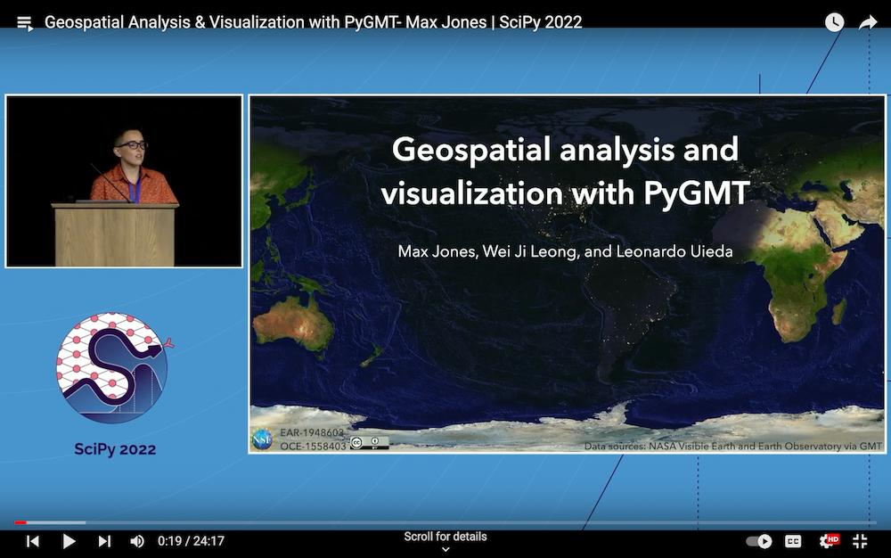
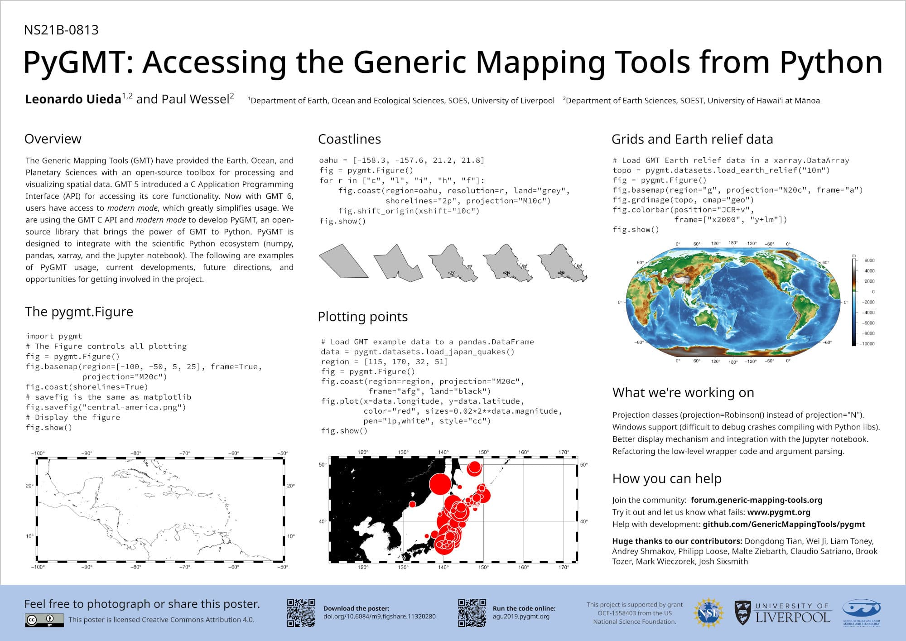
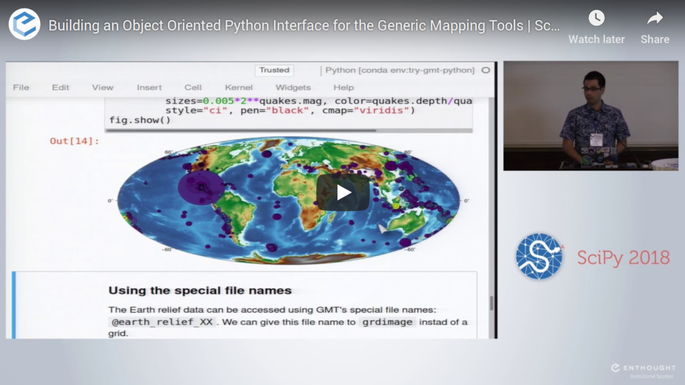
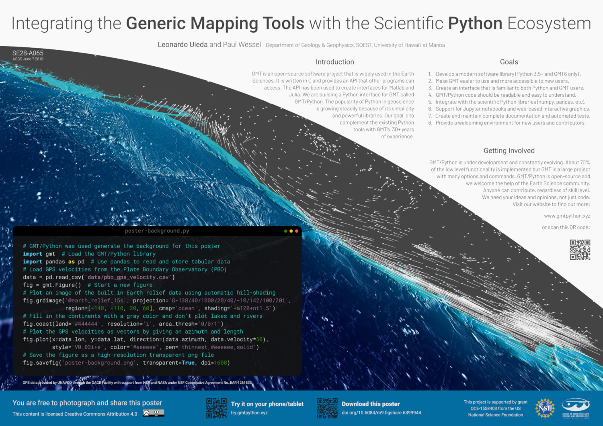
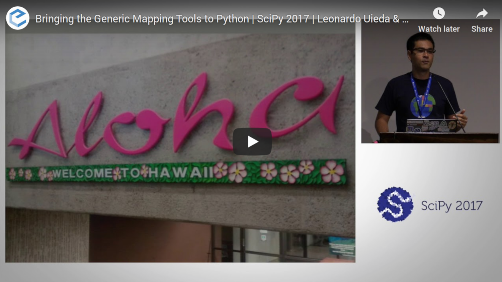
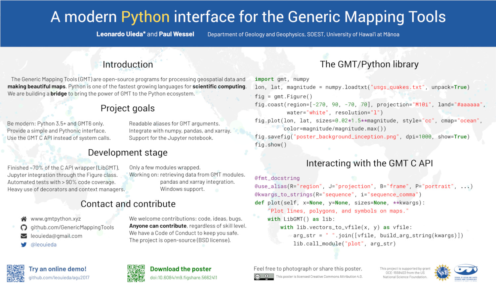

Presentations
These are international presentations, including both talks and posters, on the development of PyGMT (previously “GMT/Python”):
AGU 2024
PyGMT - Accessing and Integrating GMT with Python and the Scientific Python Ecosystem
Yvonne Fröhlich, Dongdong Tian, Wei Ji Leong, Max Jones, Michael Grund
SciPy 2022
Geospatial Analysis & Visualization with PyGMT

Max Jones, Wei Ji Leong, Leonardo Uieda
AGU 2019
PyGMT: Accessing the Generic Mapping Tools from Python

Leonardo Uieda, Paul Wessel
SciPy 2018
Building an object-oriented Python interface for the Generic Mapping Tools

Leonardo Uieda, Paul Wessel
AOGS Annual Meeting 2018
Integrating the Generic Mapping Tools with the Scientific Python Ecosystem

Leonardo Uieda, Paul Wessel
SciPy 2017
Bringing the Generic Mapping Tools to Python

Leonardo Uieda, Paul Wessel
AGU 2017
A modern Python interface for the Generic Mapping Tools

Leonardo Uieda, Paul Wessel